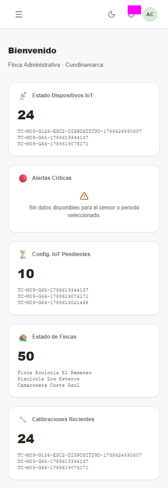
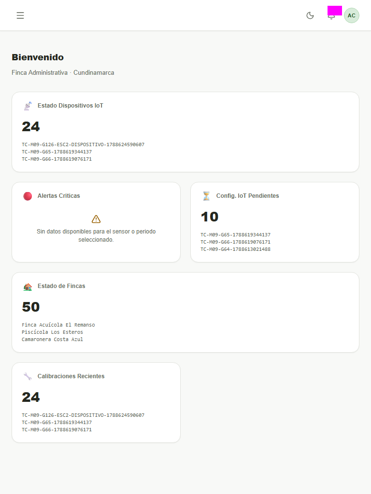
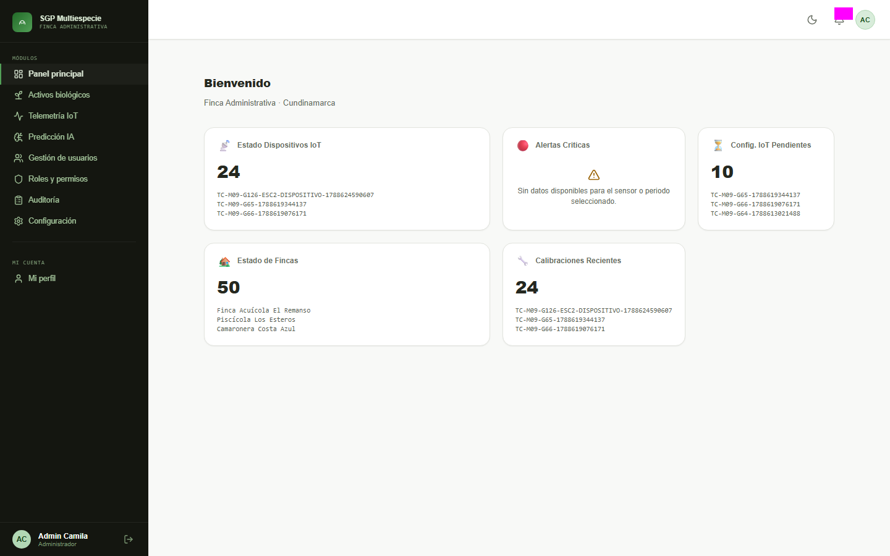

TC-DIS-70 — Consistencia visual
Panel principal (interfaz operativa del rol Administrador, página completa) · RF-25 · Adaptación de la interfaz operativa · Pareja de accesibilidad TC-DIS-69
| Fecha de ejecución | 2026-09-29 (baseline y estabilidad, noche) |
| Ambiente | TEST (https://api.inmero.co/) |
| Rol usado | Administrador (cuenta compartida de QA) |
| Herramienta | Playwright toHaveScreenshot · fullPage + captura-completa.css · workers=1 |
| Viewports | movil 375×667 · tablet 768×1024 · escritorio 1440×900 |
| Estabilidad | Estable Baseline 3/3 y dos corridas 3/3 con 0 diferencias. |
| Estado del caso | Completo |
| Lecturas fijadas | GET de layout, catálogo y datos del panel (contadores y listas), tema (Claro) y notificaciones, con cuerpos reales de TEST. El contexto de interfaz (rol y finca activa) va real: es lo que se evalúa. |
Hallazgos
- Cambio de estado del ambiente: el 29/09 admin.dev pasó de «sin finca» (bienvenida evaluada en TC-DIS-69) a finca activa «Finca Administrativa» (id 78). Por decisión del caso no se simula «sin finca»; se captura la interfaz operativa real del rol.
- Inconsistencia de datos: el panel muestra 24 dispositivos y 50 fincas, pero Configuración → IoT / Identidad Visual los muestran vacíos porque sus listados responden 400 (#166).
Bloqueos
- Solo rol Administrador; el caso pide los 3 roles — pendiente con cuentas de Productor e Ingeniero de campo.
Capturas por estado y viewport
Panel principal del Administrador con finca activa



Panel principal — rol Productor
Pendiente: falta cuenta de Productor
Pendiente: falta cuenta de Productor
Pendiente: falta cuenta de Productor
Panel principal — rol Ingeniero de campo
Pendiente: falta cuenta de Ingeniero de campo
Pendiente: falta cuenta de Ingeniero de campo
Pendiente: falta cuenta de Ingeniero de campo